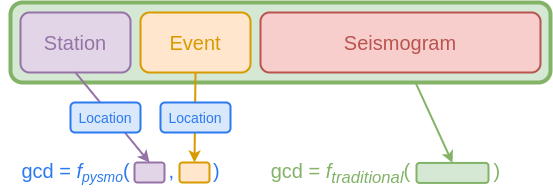
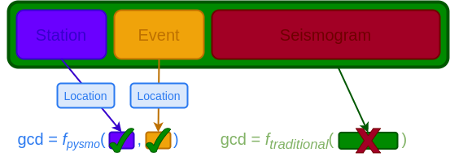
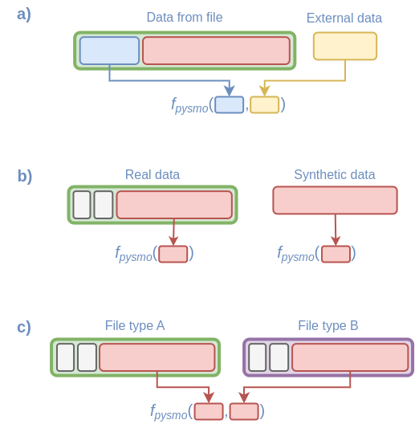

Types#
This chapter goes into detail about the types provided by pysmo. They are at the core of how pysmo works, and it is therefore worth briefly reviewing the relationship between types and classes in Python. This relationship can be explained using the built-in float type:
>>> a = 1.2 #(1)!
>>> type(a) #(2)!
<class 'float'>
>>> type(float) #(3)!
<class 'type'>
>>>
- We first assign a float to the variable
a. - Then we verify it is indeed a float using the
typecommand. - The type of the float class is...
Remember, in Python everything is an object. So in the above snippet we created an
object called a of the float class (objects are instances of a class).
Where it gets interesting, is when we query what type our variable a is using the
type command; instead of returning simply "float", the Python interpreter
tells us the type of a is <class 'float'>. In other words, the float
class is itself a type (which we verify in the last line). Simply put then, every
time we define a class in Python, we also define a type.
Protocol Classes#
Protocol classes were introduced in Python 3.8, and are discussed in detail in PEP 544. In this section, we explain how (and why) they are used in pysmo.
Especially when dealing with data that exist in the physical world, we are of the
opinion that a type should not just be an arbitrary and abstract thing. Therefore
there ought to be meaningful relationship between a class name, and the information
contained within that class. In the above example we put a floating point number
in a float object. It is pretty much self-explanatory what the float
class is for, and it seems unlikely the definition of the float class is ever going
to drastically change. If we were to write a function that requires its input to
be a floating point number, we can simply make it a requirement that any input is
of type float and we never run into trouble.
We reckon a similarly unambiguous definition is possible for a lot of types of data routinely encountered by seismologists. For example, an epicenter will always consist precisely (and only) of a set of coordinates, a hypocentre of an epicenter and a depth, and so on. In pysmo we formulise this by using protocol classes to define these seismology-specific types.
How they work#
Protocol classes serve as an interface between objects containing data, and functions using data. This is not unlike a web browser "speaking" html to communicate with a web server to request and then display data on screen. We use a hypothetical example to explore what this looks like, what some of the benefits are, and also perhaps some peculiarities one might have to be wary of.
Our hypothetical data class(1) contains only a seismogram, station and event data. We consider using an instance of this class directly to be the traditional approach, while using it via protocol classes is the pysmo way. Let's further assume our task is to calculate the great circle distance (gcd) between the station and the event in both the traditional and pysmo way.
- In this discussion "data classes" simply refers to a class containing (seismological) data, and not the Python dataclasses module.
The traditional approach would be to write the gcd function to work specifically with the data class. This means we need to know where and under what names the station and event coordinates are stored inside the class. We can then calculate the gcd by passing an instance of this class to the ftraditional function.
Using pysmo, we write the gcd function to work with two sets of coordinates instead.
Specifically, two objects that match the Location type of pysmo
serve as input for fpysmo. Any class that has attributes named latitude
and longitude (and they are both of type float) matches the
Location type, which we assume are present in the Station
and Event components of the example data class.

In the above example the same input object is used to provide data for both the
traditional and the pysmo functions, and both of them are able perform the task of
calculating the great circle distance equally well. Besides having a slightly different
syntax (which we believe to be a good thing in of itself), there appears to be no
major difference between the two methods. However, if we assume a slightly different
hypothetical data class, still containing the same information but in a different
format the, traditional function likely can no longer be used. On the other hand,
provided the new Station and Event formats still match the
Location protocol, this new data class still works with
fpysmo.

To be fair, this apparent advantage of the pysmo function over the traditional one does not come for free, as the underlying generic classes need to be compatible with the protocol classes (see here). Fortunately, if there is indeed a need to expand a class to make it compatible with the pysmo types, the effort to do so is fairly minimal (especially compared to writing or maintaining an entire class). The task of ensuring compatibility with pysmo may be done by the class maintainer, within pysmo, or even by pysmo users (in which case we encourage submitting a pull request to the pysmo repository). Given it is hard to imagine a scenario where the number of functions is not significantly higher than the number of classes used, placing the "burden of compatibility" on the class rather than the functions makes a lot more sense. In a scenario where one has two types of data classes and 100 functions, it is far less work to modify or extend the two existing class to match protocols than it is to code those 100 functions so that they work with both classes (or write duplicate functions for each class). And what if at some point in the future a third data class needs to be supported?
Besides minimising potential compatibility problems, working with pysmo types also opens up interesting ways of working with seismological data. We illustrate some below:

Using pysmo types#
Once installed, the pysmo types can be imported and used just like any class. For example:
from pysmo import Seismogram
def my_func(my_seis: Seismogram) -> float:
"""Return the sampling interval of a seismogram"""
return my_seis.delta
One thing to keep in mind, is to only ever use attributes and methods defined
by the types. For example, if a class MyClass that matches the Seismogram
type were to give access to the seismogram sampling interval also via either
a .sampling_interval(1), one might accidentally write a function using the wrong
attribute:
- The sampling interval is specified as
deltain theSeismogramtype.
from pysmo import Seismogram
def my_bad_func(my_seis: Seismogram) -> float:
"""Return the sampling interval of a seismogram"""
return my_seis.sampling_interval
This will run without error for any instances of MyClass. However, since we
are also using a class specific attribute inside the function, it is not possible
to guarantee it will also work with other classes. If we were to only ever use
MyClass instances, we might not notice our programming error for a long time
(until we try a class without the .sampling_interval attribute). These are
exactly the kinds of errors that are avoided by using type hinting together
with a good code editor or mypy.
Tip
Testing code for typing errors with mypy is as simple as running:
$ python -m mypy mycode.py
Compatible Classes#
Using pysmo types requires compatible classes that hold the actual data. In order to be compatible with a particular type, a class needs to have all the attributes and methods (with the correct type!) as defined by that particular protocol class. These classes may also possess additional attributes and methods that are not in the protocol classes, or may even be compatible with multiple types.
The classes shipped with pysmo are described in the Classes chapter.
All pysmo types#
Event
#
Bases: Hypocenter, Protocol
The Event class defines a protocol for events in pysmo.
Attributes:
| Name | Type | Description |
|---|---|---|
depth |
float
|
Event depth in metres. |
latitude |
float
|
Latitude in degrees. |
longitude |
float
|
Longitude in degrees. |
time |
datetime
|
Event origin time. |
Source code in pysmo/types.py
126 127 128 129 130 131 132 133 134 135 136 137 138 139 140 141 | |
Hypocenter
#
Bases: Location, Protocol
The Hypocenter class defines a protocol for hypocenters in pysmo.
Attributes:
| Name | Type | Description |
|---|---|---|
depth |
float
|
Event depth in metres. |
latitude |
float
|
Latitude in degrees. |
longitude |
float
|
Longitude in degrees. |
Source code in pysmo/types.py
109 110 111 112 113 114 115 116 117 118 119 120 121 122 123 | |
Location
#
Bases: Protocol
The Location defines surface coordinates in pysmo.
Attributes:
| Name | Type | Description |
|---|---|---|
latitude |
float
|
Latitude in degrees. |
longitude |
float
|
Longitude in degrees. |
Source code in pysmo/types.py
56 57 58 59 60 61 62 63 64 65 66 67 68 69 70 71 72 73 74 75 | |
Seismogram
#
Bases: Protocol
The Seismogram class defines a type for a basic seismogram as used in pysmo.
Attributes:
| Name | Type | Description |
|---|---|---|
__len__ |
int
|
The length of the Seismogram. |
data |
NDArray[float64]
|
Seismogram data. |
delta |
float
|
The sampling interval [s]. |
begin_time |
datetime
|
Seismogram begin time. |
end_time |
datetime
|
Seismogram end time (read only). |
Examples:
Usage for a function that takes a Seismogram compatible class instance as argument and returns the begin time in isoformat:
>>> from pysmo import SAC, Seismogram # SAC is a class that "speaks" Seismogram
>>> def begin_time_in_isoformat(seis_in: Seismogram) -> str:
... return seis_in.begin_time.isoformat()
...
>>> my_sac = SAC.from_file('testfile.sac')
>>> my_seismogram = my_sac.seismogram
>>> example_function(my_seismogram)
'2005-03-02T07:23:02.160000'
Source code in pysmo/types.py
7 8 9 10 11 12 13 14 15 16 17 18 19 20 21 22 23 24 25 26 27 28 29 30 31 32 33 34 35 36 37 38 39 40 41 42 43 44 45 46 47 48 49 50 51 52 53 | |
Station
#
Bases: Location, Protocol
The Station class defines a protocol for seismic stations in Pysmo.
Attributes:
| Name | Type | Description |
|---|---|---|
name |
str
|
Station name or identifier. |
network |
str | None
|
Network nam or identifiere. |
latitude |
float
|
Station latitude in degrees. |
longitude |
float
|
Station longitude in degrees. |
elevation |
float | None
|
Station elevation in metres. |
Source code in pysmo/types.py
78 79 80 81 82 83 84 85 86 87 88 89 90 91 92 93 94 95 96 97 98 99 100 101 102 103 104 105 106 | |